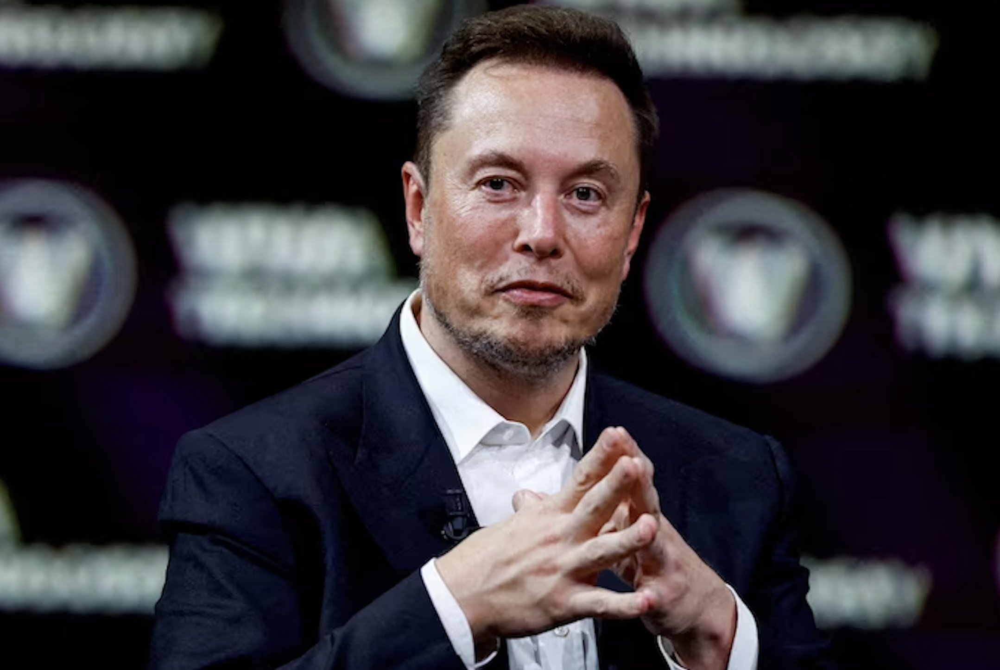

Elon Musk
Inventor
Elon Musk
Inventor
Elon Musk Portfolio
Introduction:
Welcome to the portfolio of Elon Musk, a visionary entrepreneur, inventor, and business magnate who has transformed industries and captivated the world's imagination. This portfolio provides a glimpse into Elon Musk's diverse ventures and profound impact on technology, space exploration, and sustainable energy.
Tesla, Inc.:
- Electric Vehicle Revolution:
- As the CEO and product architect of Tesla, Elon Musk has been a driving force behind the electric vehicle revolution. Tesla's innovative vehicles have reshaped the automotive industry, promoting sustainability and cutting-edge technology.
- Autonomous Driving:
- Musk has pushed the boundaries of autonomous driving technology, aiming to revolutionize transportation with self-driving capabilities integrated into Tesla vehicles.
SpaceX:
- Space Exploration Pioneering:
- Founder and CEO of SpaceX, Elon Musk has propelled the aerospace industry into new frontiers, achieving milestones such as the first privately-funded spacecraft to reach orbit and the development of the Falcon and Starship rockets.
- Mars Colonization:
- Musk's vision extends to making humanity a multi-planetary species, with ambitious plans for Mars colonization. SpaceX's Starship project represents a crucial step towards achieving this extraordinary goal.
Neuralink:
- Brain-Computer Interface:
- Elon Musk founded Neuralink to develop brain-computer interface technology, aiming to bridge the gap between the human brain and artificial intelligence. The project holds the potential to revolutionize healthcare and enhance cognitive capabilities.
The Boring Company:
- Infrastructure Innovation:
- Musk's vision for urban transportation led to the creation of The Boring Company, focused on revolutionizing tunnel construction and developing high-speed transportation systems, such as the Hyperloop.
- Loop and Hyperloop Projects::
- The Boring Company aims to alleviate traffic congestion with innovative transportation solutions, including the Loop and Hyperloop, proposing ultra-fast transit systems.
SolarCity and Solar Energy:
- Renewable Energy Integration:
- Through Tesla's acquisition of SolarCity, Musk has played a key role in advancing solar energy solutions, promoting sustainable power generation for homes and businesses.
- Gigafactories:
- Musk oversees the construction of Gigafactories worldwide, facilitating the mass production of electric vehicles, batteries, and solar products.
OpenAI:
- Artificial Intelligence Ethics:
- As a co-founder of OpenAI, Musk is committed to ensuring the ethical development of artificial intelligence. OpenAI focuses on advancing AI while considering its societal impact.
Community Engagement and Advocacy:
- Social Media Presence:
- Musk actively engages with the public through social media platforms, providing updates on his projects and sharing insights into technology, science, and beyond.